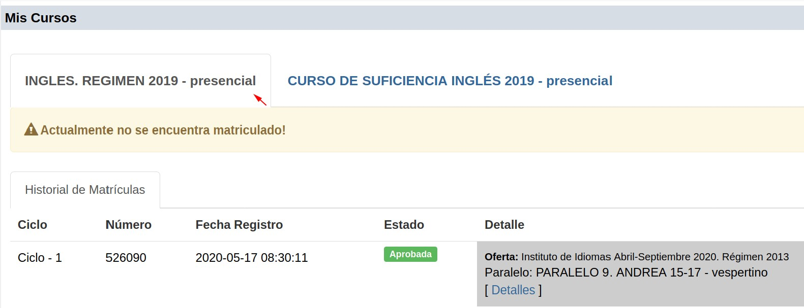
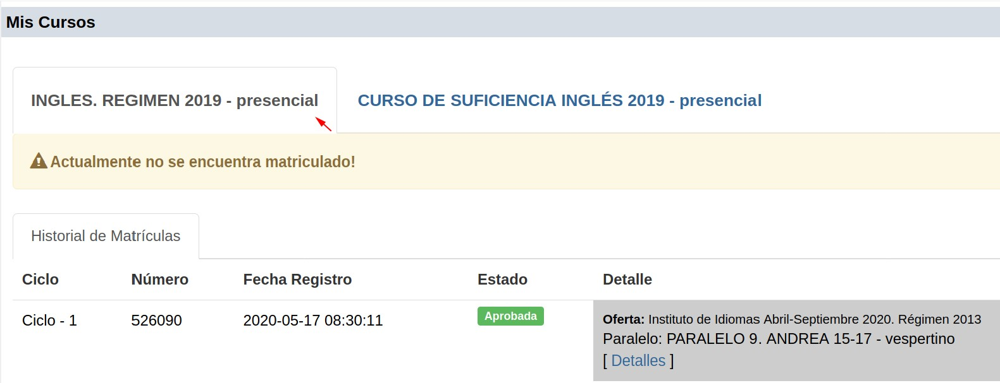

Mis Cursos
En el historial de matrículas se encuentran los niveles de los cursos de inglés, cultura física y computación, a los que se ha matriculado. Puede acceder para visualizar la calificación y los niveles que tiene aprobados o reprobados.

En el historial de matrículas se encuentran los niveles de los cursos de inglés, cultura física y computación, a los que se ha matriculado. Puede acceder para visualizar la calificación y los niveles que tiene aprobados o reprobados.

El estudiante debe hacer clic en cualquiera de los íconos de las bases expuestas y el sistema de forma automática abrirá una nueva pestaña con la base
seleccionada. Se puede acceder a más bases de datos científicas, de las que se presentan en el SGA.
Estos bases de datos función como fuente de información y de consulta para los estudiantes pertenecientes a la Universidad Nacional de Loja, estas fuentes facilitan el acceso a una información segura y confiable.
Obra publicada con Licencia Creative Commons Reconocimiento No comercial Compartir igual 3.0